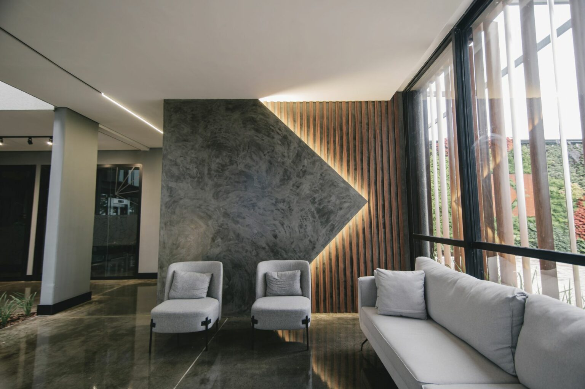
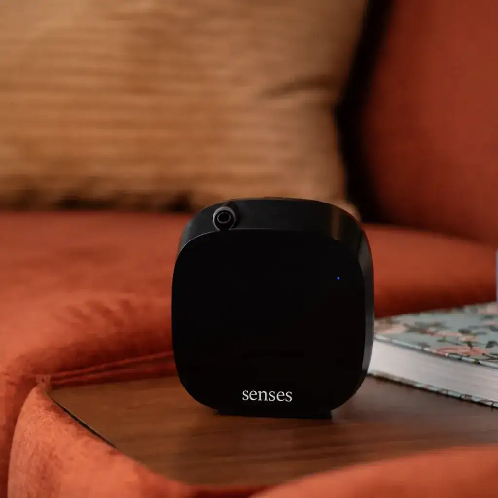
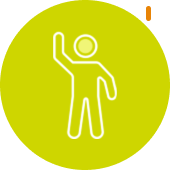

Acolhimento
A fragrância certa na recepção reduz a ansiedade e transmite cuidado desde o primeiro respiro.
Aromatize a recepção da sua clínica com a Senses e, a cada mensalidade, ajude a Turma do Bem a devolver sorrisos a jovens e mulheres em situação de vulnerabilidade. Seu paciente sente o cuidado. A sociedade sente o impacto.


A Senses cria ambientes que acolhem. A Turma do Bem, a maior rede de voluntariado especializado do mundo, transforma vidas por meio da saúde bucal. Unimos as duas missões: cada clínica que aromatiza a recepção com a Senses passa a apoiar quem mais precisa de um sorriso.
A fragrância certa na recepção reduz a ansiedade e transmite cuidado desde o primeiro respiro.
Tratamento odontológico gratuito para jovens e mulheres que não teriam como pagar.
Sua clínica ganha uma experiência sensorial completa — e uma causa para contar aos pacientes.
“Um ambiente perfumado faz o paciente se sentir bem-vindo. Um sorriso devolvido faz um jovem se sentir visto. Quando uma clínica escolhe a Senses, ela leva os dois cuidados adiante: o da sua recepção e o de quem a Turma do Bem atende.”
— Manifesto da parceria Senses + Turma do BemA Turma do Bem conecta dentistas voluntários a quem não tem condições de pagar pelo tratamento. Parte da sua assinatura Senses ajuda a manter esses programas funcionando.

90 mil+ jovens atendidosO principal programa da Turma do Bem: tratamento odontológico gratuito para jovens de 11 a 17 anos em vulnerabilidade social, independente da complexidade do caso, até os 18 anos.
 1,2 mil+ mulheres atendidas
1,2 mil+ mulheres atendidas
Tratamento odontológico gratuito para mulheres cis e trans que vivenciaram situações de violência e tiveram a dentição afetada pelas agressões.
 18 mil+ dentistas voluntários
18 mil+ dentistas voluntários
A maior rede de voluntariado especializado do mundo, presente em todo o Brasil. Muitos desses dentistas atendem em clínicas como a sua.
O olfato é o único sentido ligado diretamente ao sistema límbico — a região que processa emoção e memória. Por isso um aroma é sentido antes de ser pensado, e fica guardado por muito mais tempo do que uma imagem.
Marketing olfativo é usar isso de forma estratégica: escolher a fragrância certa para o seu ambiente, o seu público e a sua marca. Cheiro bom qualquer um entrega. O desafio é ter o cheiro certo.
Notas pensadas para acolher e acalmar diminuem a tensão de quem chega para uma consulta ou procedimento.
Na saúde, o cheiro do ambiente diz se o lugar é frio ou acolhedor, impessoal ou cuidadoso.
O paciente lembra de como se sentiu na sua clínica — e associa esse aroma a você.
O selo da parceria com a Turma do Bem mostra ao paciente que a sua clínica cuida além do consultório.
Você não precisa organizar doações nem lembrar de nada. A sua assinatura Senses faz o caminho inteiro — do primeiro respiro do seu paciente até o tratamento de quem a Turma do Bem atende.
Escolhe o modelo Senses ideal para a sua recepção, em comodato e sem investimento no equipamento.
SensesA fragrância certa acolhe quem chega e transforma a espera em uma experiência de cuidado.
SensesUma parte de cada mensalidade é destinada à Turma do Bem, todos os meses, enquanto durar a assinatura.
Senses + Turma do BemOs programas da Turma do Bem levam tratamento gratuito a jovens e mulheres que não teriam como pagar.
Turma do BemTodos em comodato e assinatura, com instalação assistida, garantia eterna do equipamento e essências MoreSenses recorrentes. O consultor Senses confirma o modelo ideal após o diagnóstico do seu espaço.
Assinatura com causa Sem investimento no equipamento: a mensalidade inclui comodato, essências MoreSenses, instalação, monitoramento e garantia eterna — e parte dela é destinada à Turma do Bem.
O equipamento é da Senses e fica na sua clínica. Você paga uma assinatura mensal que inclui tudo — e ainda apoia a Turma do Bem.
O aromatizador é cedido pela Senses. Nenhum investimento inicial em equipamento.
Parou, falhou ou desgastou? A Senses conserta ou troca, sem custo, durante toda a assinatura.
Refil MoreSenses de alta performance entregue periodicamente. Sua recepção nunca fica sem aroma.
Parte de cada mensalidade é destinada aos programas da Turma do Bem, todos os meses.
Preencha o formulário. Um consultor Senses fala com você pelo WhatsApp.
Analisamos o tamanho da recepção, o fluxo de pacientes e o posicionamento da sua clínica.
Indicamos o modelo e a fragrância MoreSenses ideais. A equipe técnica instala e valida.
Essências recorrentes, garantia eterna e parte da mensalidade destinada à Turma do Bem.
Preencha seus dados e um consultor Senses entra em contato pelo WhatsApp para agendar o diagnóstico gratuito e apresentar a assinatura com impacto para a Turma do Bem.
Em breve um consultor Senses vai falar com você. Se preferir, adiante a conversa agora:
Continuar no WhatsAppAinda ficou alguma pergunta? Fale com o consultor depois de preencher o formulário.
Parte de cada mensalidade paga à Senses é destinada à Turma do Bem, todos os meses, enquanto durar a sua assinatura. Você não precisa fazer nenhuma doação separada.
Não. Qualquer clínica ou consultório pode assinar e apoiar a causa. Se você já é Dentista do Bem, conte no formulário — é ótimo saber!
A partir de R$169/mês (Brisa), R$269/mês (Serena) ou R$449/mês (Ventus). Inclui equipamento em comodato, diagnóstico do ambiente, curadoria da fragrância, instalação assistida, essências MoreSenses recorrentes, manutenção, monitoramento e garantia eterna.
É um empréstimo do equipamento. O aromatizador continua sendo da Senses e fica instalado na sua clínica enquanto durar a assinatura. Você não paga pelo aparelho.
Enquanto você for assinante, qualquer defeito ou desgaste do aromatizador é resolvido pela Senses — com conserto ou troca do equipamento, sem custo adicional.
Depende do tamanho e do fluxo do ambiente. Como referência: Brisa para até 25 m², Serena para até 45 m² e Ventus para até 160 m². O consultor confirma após o diagnóstico.
A curadoria considera o perfil do seu público e a sua especialidade. A intensidade e os horários de difusão são programados para um aroma presente, mas nunca invasivo.